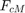
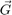
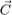
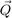
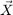
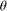
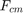
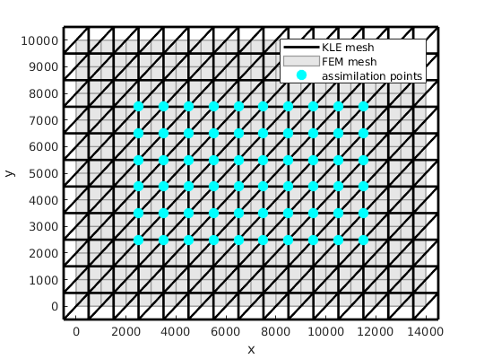
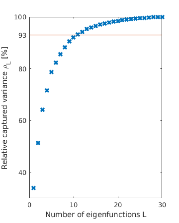
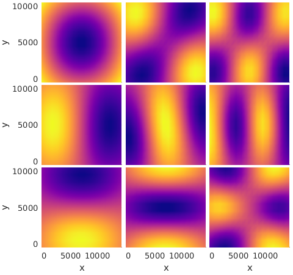

Example 3 -- Seperated represenation of the random field 
This example shows the KLE of a random field
Contents
- 1) Choose a spatial mesh with nodes
- Plot KLE mesh, FEM mesh and the assimilation points
- 2) Compute the Gramian matrix  of the nodal basis
- 3) Compute the covariance matrix  from the covariance function
- 4) Solve the generalized eigenvalue problem
- 5) Truncate the expansion capturing at least 93% of the variance
- Plot the first nine eigenfunctions
- 6a) Define input parameter  = 
- 6b) Seperate represenation of the underlying Gaussian field 
- 6c) Seperated representation of the scaling factor 
1) Choose a spatial mesh with nodes
% number of nodes in the x direction nx = 16; % number of nodes in the y direction ny = 12; % meshnodes [xm, x] = linspace_midpoints(-500, 14500, nx-1); [ym, y] = linspace_midpoints(-500, 10500, ny-1); % create the KLE mesh [pos, els] = create_rect_mesh(x, y);
Plot KLE mesh, FEM mesh and the assimilation points
hm = figure(); hm.Position = [680 575 540 400]; % Plot KLE mesh h_KLE = plot_mesh(pos, els, 'width', 2); % Plot FEM mesh hold on [X, Y] = meshgrid(xm, ym); h_FEM = mesh(X, Y, X*0-1); set(h_FEM,'EdgeColor',[0.6, 0.6, 0.6]) set(h_FEM, 'FaceColor', [0.9, 0.9, 0.9]) set(h_FEM,'LineWidth',1) xlim ([-500, 14500]); ylim([-500, 10500]) % Plot assimilation points [Xa, Ya]= meshgrid(x(4:end-3), y(4:end-3)); ha = plot3(Xa, Ya, Xa*0+1, '.', 'MarkerSize', 30, 'Color', 'c'); % legend and labels legend([h_KLE, h_FEM(1), ha(1)], 'KLE mesh', 'FEM mesh', 'assimilation points') xlabel('x') ylabel('y') save_png(hm, 'KLE_mesh', 'figdir', 'figs', 'res', 600)
2) Compute the Gramian matrix of the nodal basis
G = mass_matrix(pos, els);
3) Compute the covariance matrix from the covariance function
% Define parameters of the Metern-covariance function nu = 2; l_c = 4000; sigma = 1; % Define the covariance function cov_func = funcreate(@matern_covariance, nu, funarg, funarg, l_c, sigma); % Compute covariance matrix C = covariance_matrix(pos, cov_func);
4) Solve the generalized eigenvalue problem
% Number of the eigenfunctions and eigenvalues to compute L = 30; % Solve the generalized eigenvalue problem [v_k_i,sigma_i]=kl_solve_evp(C, G, L); % (For POD the only difference in the code is to put end empty bracket for % G)
5) Truncate the expansion capturing at least 93% of the variance
% checking the captured variance with the 1-30 eigenfunctions rho_L = cumsum(sigma_i.^2)/sum(sigma_i.^2)*100; % plot captured variance h = figure(); h.Position =[680 550 360 450]; plot(rho_L, 'x', 'LineWidth', 3); % plot the 92% limit we would like to achieve hold on plot([0,30],[93,93]) xlabel('Number of eigenfunctions L') ylabel('Relative captured variance \rho_L [%]') yticks([0, 20, 40, 60, 80, 93, 100]) save_png(h, 'eigenvalues', 'figdir', 'figs', 'res', 600) % truncate at L which captures at least 93% of the variance L = min(find(rho_L>93)); sigma_i = sigma_i(1:L); v_k_i = v_k_i(:, 1:L);
Plot the first nine eigenfunctions
hf = figure; hf.Position = [680 550 480 450]; ha = multiplot_init(3,3); for i = 1:9 multiplot plot_field(pos, els, v_k_i(:, i), 'colormap', plasma()) %colormap(ha(i), 'jet') if rem(i,3)== 0 xlabel('x') else xticks([]); end if i<4 ylabel('y') else yticks([]) end zlabel(strvarexpand('r_$i$')) shading interp end reduce_gap_between_plots(ha, 0.01, 0.01, 0.14, 0.1) % save figure save_png(hf, 'eigenfunctions', 'figdir', 'figs', 'res', 600)
6a) Define input parameter =
Q = generate_stdrn_simparamset(ones(L,1));
6b) Seperate represenation of the underlying Gaussian field
% The matrices collecting the eigenvectors and the eigenvalues V = v_k_i; S = diag(sigma_i); % The map from $q$ to $\theta$ q2theta = @(q) (V*S*q); % And its inverse map, the theta field projected onto the eigenbasis theta2q = @(theta) (S\V'*G*theta);
6c) Seperated representation of the scaling factor
% Define prior distribution of f_cm mean_f = 5.5; var_f = 10.0; % Parameters of the lognormal field mu = log((mean_f^2)/sqrt(var_f+mean_f^2)); sig = sqrt(log(var_f/(mean_f^2)+1)); % The map from the input parameter to the random field q2f=@(q)exp(binfun(@plus, q2theta(q)*sig, mu)); % And the inverse map f2q=@(f)theta2q(binfun(@minus, log(f), mu)/sig);